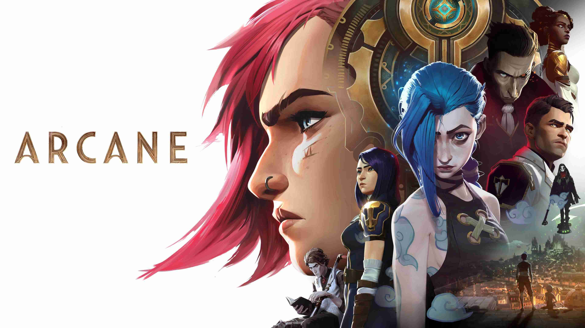
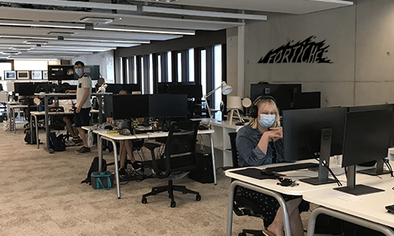
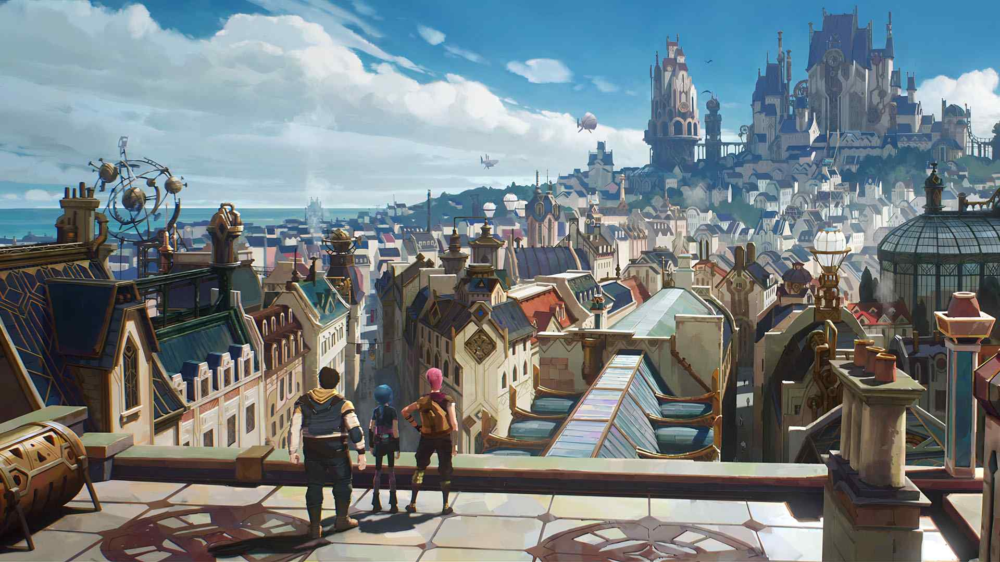
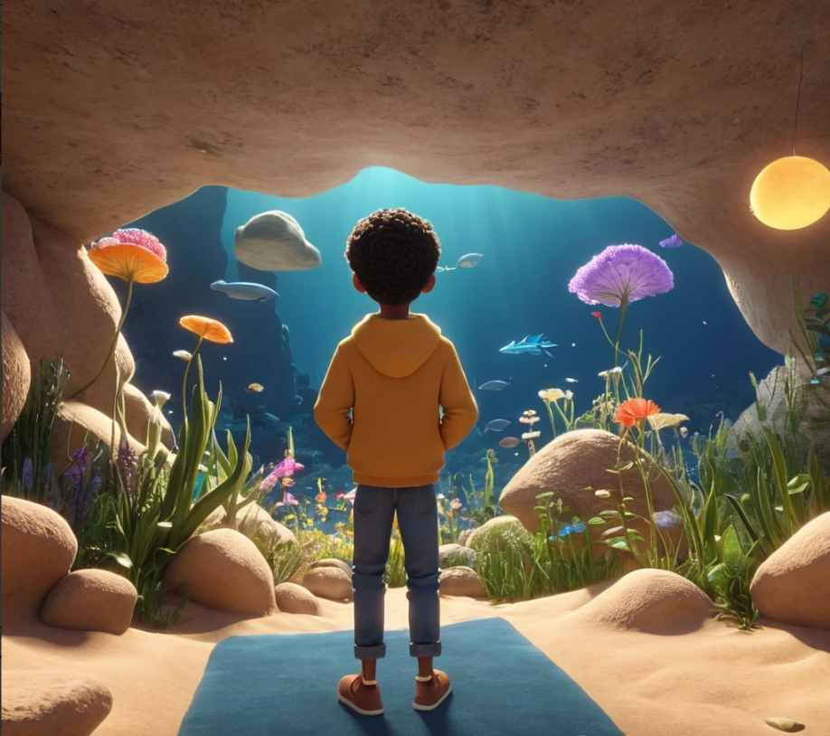
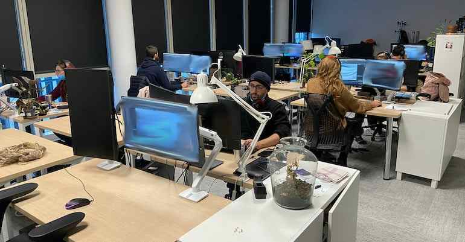
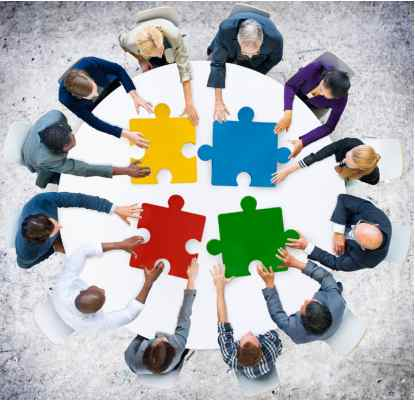
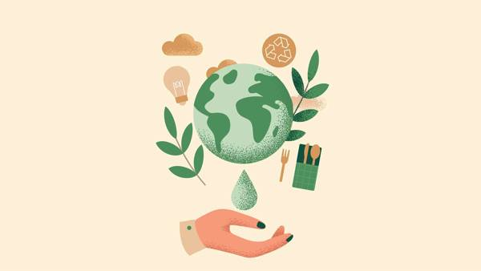
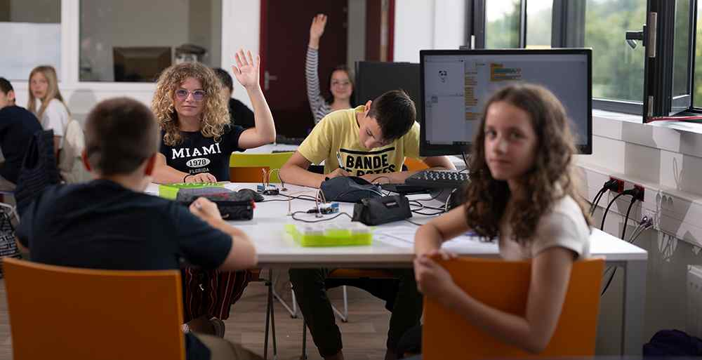

À propos
Fortiche Production, fondée en 2014, est une entreprise française d’animation et de production audiovisuelle qui s’est rapidement imposée comme l’un des studios les plus innovants et créatifs dans l’industrie.

Fortiche est un studio d'animation français, célèbre pour son travail sur des projets comme Arcane, la série animée basée sur l'univers de League of Legends, en collaboration avec Riot Games.

Les studios de Fortiche Production sont basés à Paris, en France. Ils ont également des bureaux à Montpellier et à Las Palmas de Gran Canaria (aux îles Canaries, Espagne).

Ce studio a su se démarquer en créant une signature visuelle unique qui marie l’élégance de l’animation 2D avec la fluidité et la richesse de la 3D, un style qui est désormais l’une de ses marques de fabrique.

La vision de Fortiche repose sur l’idée que l’animation n’est pas seulement un outil visuel, mais un puissant médium de narration qui peut susciter des émotions profondes et créer des univers immersifs.

L'un des aspects les plus fascinants de Fortiche est leur approche multidisciplinaire de la création. Leur équipe, composée de talents venus de divers horizons, inclut des artistes de storyboard, des animateurs 2D et 3D, des scénaristes, des techniciens en effets visuels, ainsi que des ingénieurs spécialisés dans les technologies numériques.

Ce mélange de compétences permet à Fortiche de réaliser des œuvres visuellement complexes et émotionnellement percutantes. La diversité de l’équipe favorise une grande flexibilité dans leur approche, avec une culture d’entreprise qui valorise la collaboration, l’expérimentation et l’innovation.

Fortiche n’est pas seulement reconnu pour la qualité de son travail, mais aussi pour ses engagements sociaux et environnementaux. L’entreprise s'efforce d'adopter des pratiques de production durables en minimisant son empreinte écologique.

De plus, Fortiche participe activement à des initiatives culturelles et éducatives, en collaborant avec des écoles d'art et en soutenant des jeunes talents à travers des stages et des programmes de mentorat. Ils s’engagent à promouvoir l’animation comme un art accessible et inclusif, en participant à des événements communautaires et en soutenant la prochaine génération de créateurs.